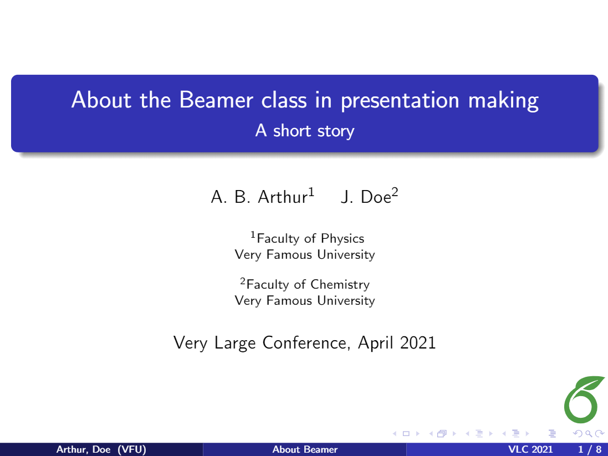
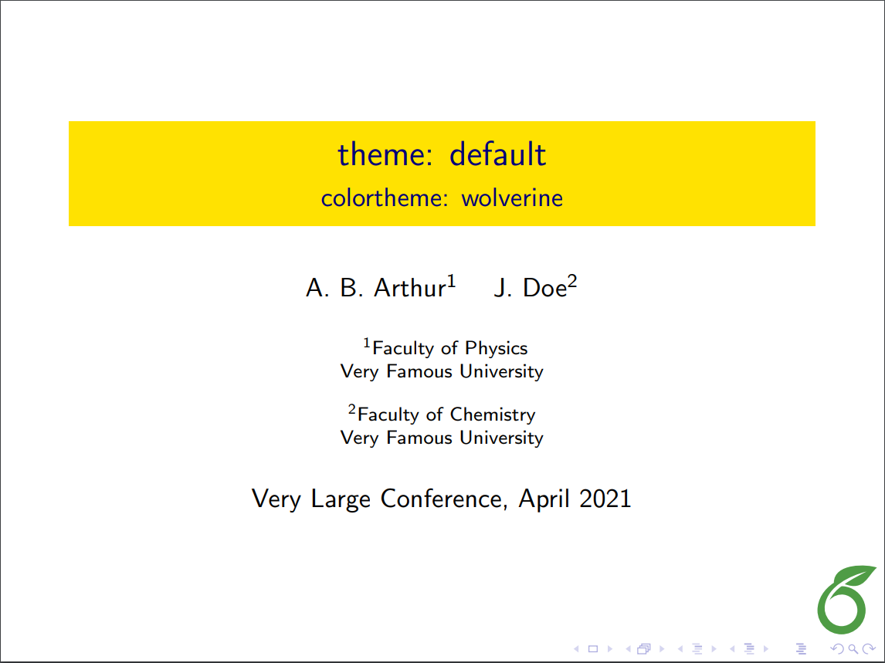
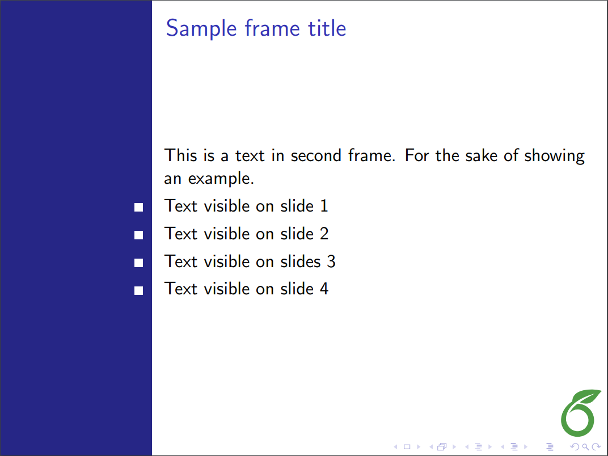
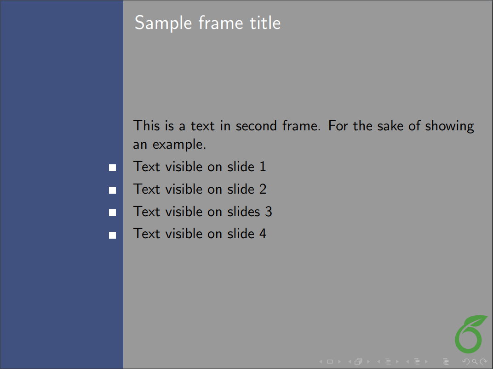
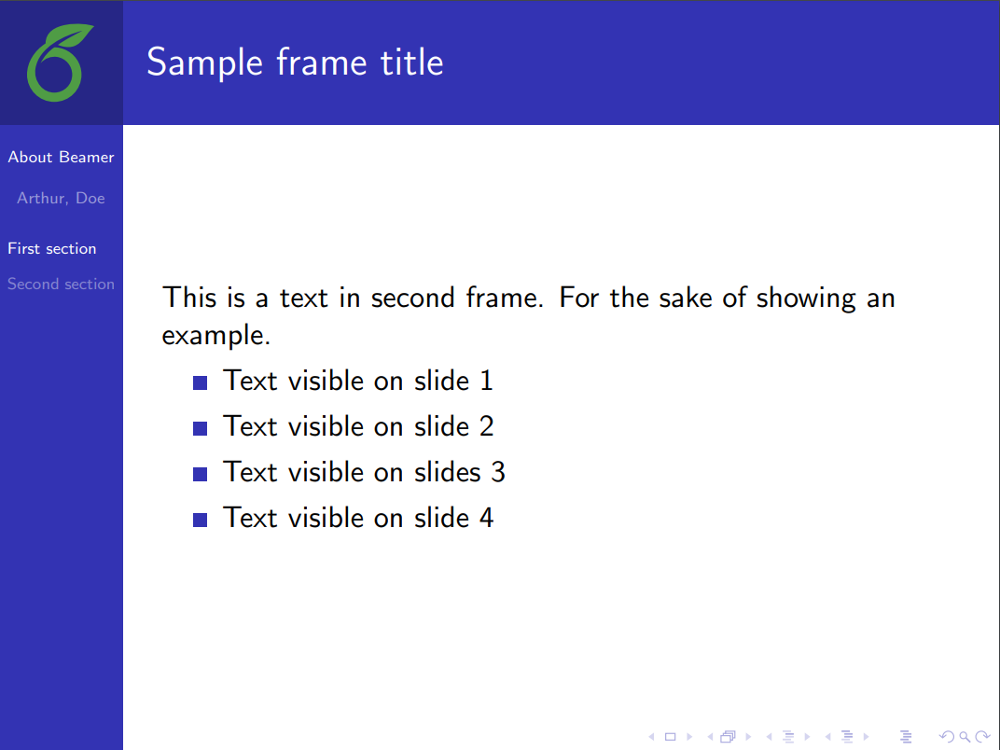
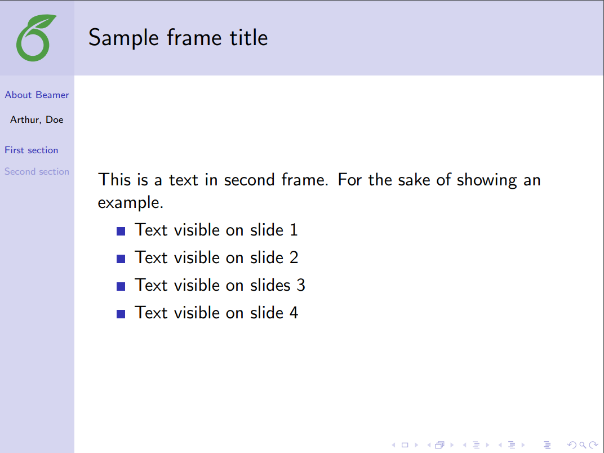
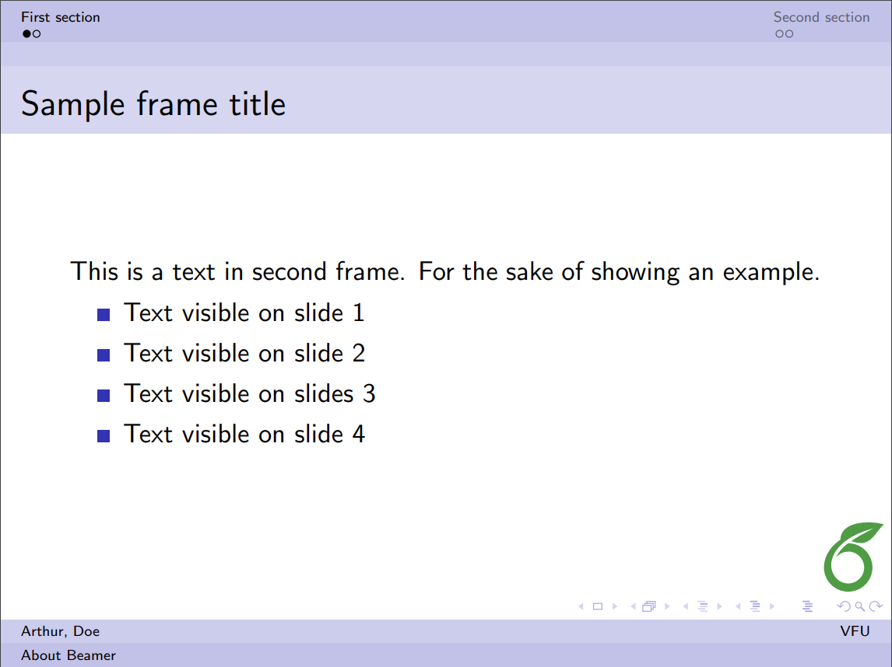
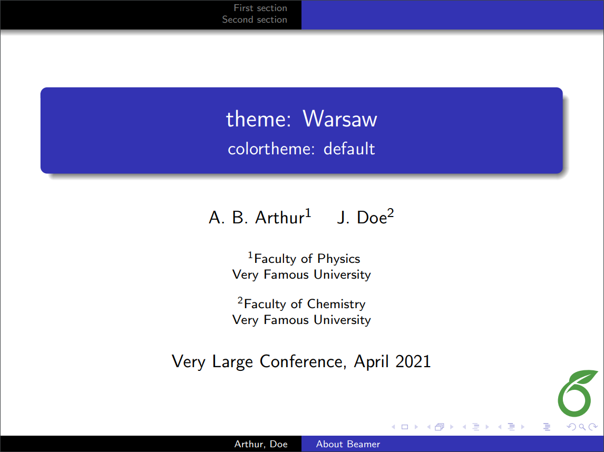

Beamer
Beamer is a powerful and flexible LaTeX class to create great looking presentations. This article outlines the basis steps to making a Beamer slideshow: creating the title page, adding a logo, highlighting important points, making a table of contents and adding effects to the slideshow.
Introduction
A minimal working example of a simple beamer presentation is provided below.
\documentclass{beamer}
%Information to be included in the title page:
\title{Sample title}
\author{Anonymous}
\institute{Overleaf}
\date{2021}
\begin{document}
\frame{\titlepage}
\begin{frame}
\frametitle{Sample frame title}
This is some text in the first frame. This is some text in the first frame. This is some text in the first frame.
\end{frame}
\end{document}
Open this beamer document in Overleaf
After compilation, a two-page PDF file will be produced. The first page is the titlepage, and the second one contains sample content.
The first statement in the document declares this is a Beamer slideshow: \documentclass{beamer}
The first command after the preamble, \frame{\titlepage}, generates the title page. This page may contain information about the author, institution, event, logo, and so on. See the title page section for a more complete example.
The frame environment creates the second slide, the self-descriptive command \frametitle{Sample frame title} is optional.
It is worth noting that in beamer the basic container is a frame. A frame is not exactly equivalent to a slide, one frame may contain more than one slides. For example, a frame with several bullet points can be set up to produce a new slide to reveal each consecutive bullet point.
Beamer main features
The Beamer class offers some useful features to bring your presentation to life and make it more attractive. The most important ones are listed below.
The title page
There are some more options for the title page than the ones presented in the introduction. The next example is a complete one, most of the commands are optional.
\title[About Beamer] %optional
{About the Beamer class in presentation making}
\subtitle{A short story}
\author[Arthur, Doe] % (optional, for multiple authors)
{A.~B.~Arthur\inst{1} \and J.~Doe\inst{2}}
\institute[VFU] % (optional)
{
\inst{1}%
Faculty of Physics\\
Very Famous University
\and
\inst{2}%
Faculty of Chemistry\\
Very Famous University
}
\date[VLC 2021] % (optional)
{Very Large Conference, April 2021}
\logo{\includegraphics[height=1cm]{overleaf-logo}}

Open an example of the beamer package in Overleaf
The distribution of each element in the title page depends on the theme, see the Themes subsection for more information. Here is a description of each command:
\title[About Beamer] {About the Beamer class...}- This is important, the title of your presentation must be inside braces. You can set an optional shorter title in the square brackets: in the example, this is About Beamer.
\subtitle- Subtitle for you presentation. This can be omitted if unnecessary.
\author[Arthur, Doe]{A.~B.~Arthur\inst{1} \and J.~Doe\inst{2}}- First, a short version of the authors' names, comma separated, can be added inside square brackets. This is optional, if omitted the full name is displayed (at the bottom of the title page in the example). Then, inside braces, are the full names of the authors, separated by an
\andcommand. There's also a\inst{1}command that puts a superscript to reference the institution where each author works; it's optional and can be omitted if there is only one author or the listed authors work at the same institution.
\institute[VFU]{\inst{1}Faculty...- In the argument of this command, you can declare the institute each author belongs to. The parameter inside brackets, the acronym of the institute/university, is optional. Then the name of the institute is added inside braces; if there's more than one institute they must be separated with an
\andcommand. The\institutecommand is optional, but it is required for the superscripts inserted by the\instcommands in the previous code.
\date[VLC 2021]{Very Large Conference, April 2021}- In this declaration, you can set the name and date of the event where you are going to present your slides. The parameter inside brackets is an optional shorter name, in this example is displayed at the bottom of the title page.
\logo{\includegraphics...}- This adds a logo to be displayed. In this theme, the logo is set at the lower right corner. You can use text, or include an image.
Creating a table of contents
Usually when you have a long presentation, it's convenient to divide it into sections or even subsections. In this case, you can add a table of contents at the beginning of the document. Here is an example:
\begin{frame}
\frametitle{Table of Contents}
\tableofcontents
\end{frame}
As you see, is simple. Inside the frame environment you set the title and add the command \titlepage.
It's also possible to put the table of contents at the beginning of each section and highlight the title of the current section. Just add the code below to the preamble of your LaTeX document:
\AtBeginSection[]
{
\begin{frame}
\frametitle{Table of Contents}
\tableofcontents[currentsection]
\end{frame}
}
If you use \AtBeginSubsection[] instead of \AtBeginSection[], the table of contents will appear at the beginning of each subsection.
Open an example of the beamer package in Overleaf
Adding effects to a presentation
In the introduction, we saw a simple slide using the \begin{frame} \end{frame} delimiters. It was mentioned that a frame is not equivalent to a slide, and the next example will illustrate why, by adding some effects to the slideshow. In this example, the PDF file produced will contain 4 slides—this is intended to provide a visual effect in the presentation.
\begin{frame}
\frametitle{Sample frame title}
This is a text in second frame.
For the sake of showing an example.
\begin{itemize}
\item<1-> Text visible on slide 1
\item<2-> Text visible on slide 2
\item<3> Text visible on slide 3
\item<4-> Text visible on slide 4
\end{itemize}
\end{frame}
Open this frame in Overleaf (using \usetheme{Madrid})
In the code there's a list, declared by the \begin{itemize} \end{itemize} commands, and next to each item is a number enclosed in two special characters: < >. This will determine in which slide the element will appear, if you append a - at the end of the number, the item will be shown in that and the subsequent slides of the current frame, otherwise it will appear only in that slide. Check the animation for a better understanding of this.
These effects can be applied to any type of text, not only to the itemize environment. There's a second command whose behaviour is similar, but it's simpler since you don't have to specify the slides where the text will be unveiled.
\begin{frame}
In this slide \pause
the text will be partially visible \pause
And finally everything will be there
\end{frame}
Open this frame in Overleaf (using \usetheme{Madrid})
This code will generate three slides to add a visual effect to the presentation. \pause will prevent the text below this point and above the next \pause declaration to appear in the current slide.
Open an example of the beamer package in Overleaf
Highlighting important sentences/words
In a presentation is a good practice to highlight the important points to make it easier for your audience to identify the main topic.
\begin{frame}
\frametitle{Sample frame title}
In this slide, some important text will be
\alert{highlighted} because it's important.
Please, don't abuse it.
\begin{block}{Remark}
Sample text
\end{block}
\begin{alertblock}{Important theorem}
Sample text in red box
\end{alertblock}
\begin{examples}
Sample text in green box. The title of the block is ``Examples".
\end{examples}
\end{frame}
Open this frame in Overleaf (using \usetheme{Madrid})
If you want to highlight a word or a phrase within a paragraph, the command \alert{} will change the style of the word inside the braces. The way the enclosed text will look depends on the theme you are using.
To highlight a paragraph with concepts, definitions, theorems or examples, the best option is to put it inside a box. There are three types of box, and it's up to you to decide which one better fits in your presentation:
\begin{block}{Remark} \end{block}- A block box will wrap the text in a box with the same style as the rest of the presentation. The text inside the braces after the
\begin{block}code is the title of the box.
\begin{alertblock}{Important theorem} \end{alertblock}- The same as block but the style contrasts the one used by the presentation.
\begin{examples} \end{examples}- Again, is very similar to block, the box has a different style but less contrasting than alertblock.
Customizing your presentation
There are some aspects of a Beamer presentation that can be easily customized. For instance, you can set different themes, colours and change the default text layout into a two-column format.
Open an example of the beamer package in Overleaf
Themes and colorthemes
It's really easy to use a different theme in your slideshow. For example, the Madrid theme (most of the slideshows in this article use this theme) is set by adding the following command to the preamble:
\usetheme{Madrid}
Below are two more examples.
Berkeley theme
You can open this LaTeX code in Overleaf
to explore the Berkeley theme.
Copenhagen theme
You can open this LaTeX code in Overleaf
to explore the Copenhagen theme.
Using a colortheme
A theme can be combined with a colortheme to change the colour used for different elements.
\documentclass{beamer}
\usetheme{Madrid}
\usecolortheme{beaver}
You must put the \usecolortheme statement below the \usetheme command. You can open this LaTeX code in Overleaf
to explore the Madrid theme with the beaver colortheme. For various options, check out the table of screenshots of different themes and colorthemes in the Reference guide below.
Fonts
You can change several parameters about the fonts. Here we will mention how to resize them and change the type of font used.
Font sizes
The font size, here 17pt, can be passed as a parameter to the beamer class at the beginning of the document preamble: \documentclass[17pt]{beamer}. Below is an example showing the result of using the 17pt font-size option:
\documentclass[17pt]{beamer}
\usepackage{tikz}
\usetheme{Madrid}
\usecolortheme{beaver}
\title[About Beamer] %optional
{Madrid theme + beaver}
\subtitle{Demonstrating larger fonts}
\author[Arthur, Doe] % (optional)
{A.~B.~Arthur\inst{1} \and J.~Doe\inst{2}}
\institute[VFU] % (optional)
{
\inst{1}%
Faculty of Physics\\
Very Famous University
\and
\inst{2}%
Faculty of Chemistry\\
Very Famous University
}
\date[VLC 2021] % (optional)
{Very Large Conference, April 2021}
% Use a simple TikZ graphic to show where the logo is positioned
\logo{\begin{tikzpicture}
\filldraw[color=red!50, fill=red!25, very thick](0,0) circle (0.5);
\node[draw,color=white] at (0,0) {LOGO HERE};
\end{tikzpicture}}
\begin{document}
\frame{\titlepage}
%Highlighting text
\begin{frame}
\frametitle{Demonstrating large fonts}
In this slide, some important text will be
\alert{highlighted} because it's important.
Please, don't abuse it.
\begin{block}{Remark}
Sample text
\end{block}
\end{frame}
\end{document}
Open this beamer document in Overleaf
Available font sizes are 8pt, 9pt, 10pt, 11pt, 12pt, 14pt, 17pt, 20pt. Default font size is 11pt (which corresponds to 22pt at the full screen mode).
Font types
To change the font types in your beamer presentation there are two ways, either you use a font theme or import directly a font from your system. Let's begin with a font theme:
\documentclass{beamer}
\usefonttheme{structuresmallcapsserif}
\usetheme{Madrid}
Open a beamer document using these settings in Overleaf
The \usefonttheme{} is self-descriptive. The available themes are: structurebold, structurebolditalic, structuresmallcapsserif, structureitalicsserif, serif and default.
You can also import font families installed in your system.
\documentclass{beamer}
\usepackage{bookman}
\usetheme{Madrid}
Open a beamer document using these settings in Overleaf
The command \usepackage{bookman} imports the bookman family font to be used in the presentation. The available fonts depend on your LaTeX installation, the most common are: mathptmx, helvet, avat, bookman, chancery, charter, culer, mathtime, mathptm, newcent, palatino, and pifont.
Columns
Sometimes the information in a presentation looks better in a two-column format. In such cases use the columns environment:
\begin{frame}
\frametitle{Two-column slide}
\begin{columns}
\column{0.5\textwidth}
This is a text in first column.
$$E=mc^2$$
\begin{itemize}
\item First item
\item Second item
\end{itemize}
\column{0.5\textwidth}
This text will be in the second column
and on a second thoughts, this is a nice looking
layout in some cases.
\end{columns}
\end{frame}
Open this frame in Overleaf (using \usetheme{Madrid})
After the frame and frametitle declarations start a new columns environment delimited by the \begin{columns} \end{columns}. You can declare each column's width with the \column{0.5\textwidth} code, a lower number will shrink the width size.
Open an example of the beamer package in Overleaf
Reference guide
Below is a table with screenshots of the title page and a normal slide in Beamer using different combinations of themes (rows) and colorthemes (columns). To have a complete list of themes and colorthemes see the further reading section for references.
| default | beaver | beetle | seahorse | wolverine | |
|---|---|---|---|---|---|
| default | 
|
 | |||
| AnnArbor | 
|
||||
| Antibes | |||||
| Bergen |  |  | 
| ||
| Berkeley |  |  | |||
| Berlin |  | ||||
| Boadilla |  
|

|
|||
| CambridgeUS | |||||
| Copenhagen | |||||
| Darmstadt | |||||
| Goettingen | |||||
| PaloAlto | 
| ||||
| Szeged | |||||
| Warsaw |  |
Further reading
For more information, see the full package documentation here. The following resources may also be useful:
Overleaf guides
- Creating a document in Overleaf
- Uploading a project
- Copying a project
- Creating a project from a template
- Using the Overleaf project menu
- Including images in Overleaf
- Exporting your work from Overleaf
- Working offline in Overleaf
- Using Track Changes in Overleaf
- Using bibliographies in Overleaf
- Sharing your work with others
- Using the History feature
- Debugging Compilation timeout errors
- How-to guides
- Guide to Overleaf’s premium features
LaTeX Basics
- Creating your first LaTeX document
- Choosing a LaTeX Compiler
- Paragraphs and new lines
- Bold, italics and underlining
- Lists
- Errors
Mathematics
- Mathematical expressions
- Subscripts and superscripts
- Brackets and Parentheses
- Matrices
- Fractions and Binomials
- Aligning equations
- Operators
- Spacing in math mode
- Integrals, sums and limits
- Display style in math mode
- List of Greek letters and math symbols
- Mathematical fonts
- Using the Symbol Palette in Overleaf
Figures and tables
- Inserting Images
- Tables
- Positioning Images and Tables
- Lists of Tables and Figures
- Drawing Diagrams Directly in LaTeX
- TikZ package
References and Citations
- Bibliography management with bibtex
- Bibliography management with natbib
- Bibliography management with biblatex
- Bibtex bibliography styles
- Natbib bibliography styles
- Natbib citation styles
- Biblatex bibliography styles
- Biblatex citation styles
Languages
- Multilingual typesetting on Overleaf using polyglossia and fontspec
- Multilingual typesetting on Overleaf using babel and fontspec
- International language support
- Quotations and quotation marks
- Arabic
- Chinese
- French
- German
- Greek
- Italian
- Japanese
- Korean
- Portuguese
- Russian
- Spanish
Document structure
- Sections and chapters
- Table of contents
- Cross referencing sections, equations and floats
- Indices
- Glossaries
- Nomenclatures
- Management in a large project
- Multi-file LaTeX projects
- Hyperlinks
Formatting
- Lengths in LaTeX
- Headers and footers
- Page numbering
- Paragraph formatting
- Line breaks and blank spaces
- Text alignment
- Page size and margins
- Single sided and double sided documents
- Multiple columns
- Counters
- Code listing
- Code Highlighting with minted
- Using colours in LaTeX
- Footnotes
- Margin notes
Fonts
Presentations
Commands
Field specific
- Theorems and proofs
- Chemistry formulae
- Feynman diagrams
- Molecular orbital diagrams
- Chess notation
- Knitting patterns
- CircuiTikz package
- Pgfplots package
- Typesetting exams in LaTeX
- Knitr
- Attribute Value Matrices
Class files
- Understanding packages and class files
- List of packages and class files
- Writing your own package
- Writing your own class